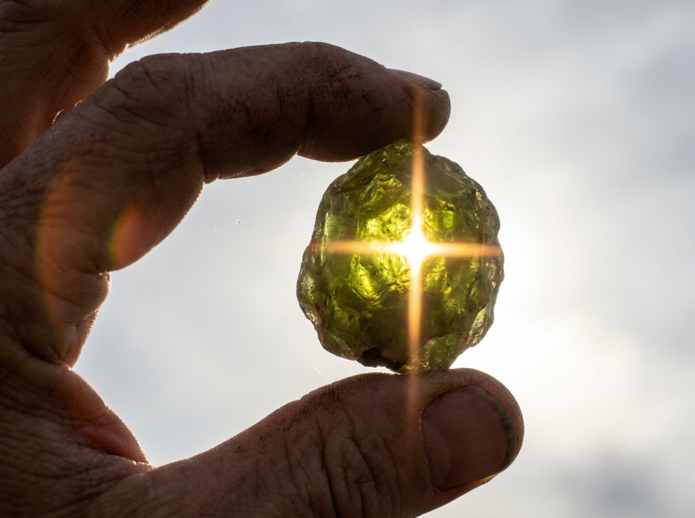

Lapidarium
Die Steine der sieben Planeten
Agrippa von Nettesheim zählt in den Drei Büchern über die verborgene Philosophie (1533) für jeden Planeten auf, was ihm auf Erden zugehört: Elemente, Säfte, Metalle, Steine, Pflanzen, Tiere. Die Steinlisten der Kapitel XXIII bis XXIX stehen unten vollständig — in seiner Reihenfolge, mit seinen Namen.
Was er meinte, ist nicht immer, was wir heute so nennen. Der mittelalterliche saphirus war oft Lapislazuli, der topazius oft Chrysolith. Wo sich eine Bestimmung sicher treffen lässt, steht sie dabei; wo nicht, ist das vermerkt. Dazu jeweils, woher man den Stein heute bekommt und was er ungefähr kostet.
